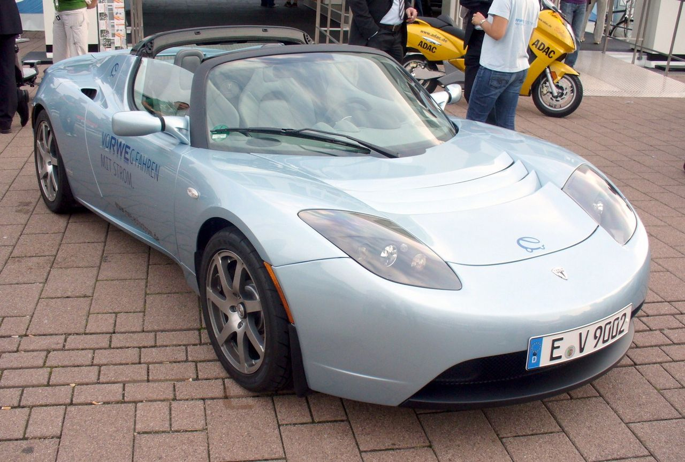

Tesla, Inc.
Tesla (anteriormente, Tesla Motors, Inc.)
es una empresa estadounidense con sede en Austin, Texas,
y liderada por Elon Musk, que diseña, fabrica y vende autom
óviles eléctricos, componentes para la propulsión de vehícu
los eléctricos, techos solares, instalaciones solares fotovoltaicas y baterías domésticas.
Fue fundada en julio de 2003 por los ingenieros Martin Eberhar
d y Marc Tarpenning como Tesla Motors. El nombre de la empresa
es un tributo al inventor e ingeniero eléctrico Nikola Tesla.
Los siguientes tres empleados fueron Ian Wright, Elon Musk y JB
Straubel, quienes fueron nombrados co-fundadores de la compañía. E
lon Musk ya había fundado varias empresas, era millonario y había te
nido la idea de desarrollar baterías para el almacenamiento de en
ergía renovable. Después de reunirse con Eberhard y Wright, Musk i
nvirtió 6.5 millones de dólares en la compañía. Por lo que quedó como
presidente de la empresa, Martin Eberhard como CEO y JB Straubel como CTO.

Modelos en producción.
Tesla Model S
El Tesla Model S es un liftback eléctrico fabricado por Tesla Motors,
que comenzó sus entregas en julio de 2012. La producción anual es de 50.000 unidades
. Puede acomodar a 5 adultos y 2 niños que pueden ir en asientos traseros opuestos a l
a marcha. Tiene una autonomía entre 338 km y 507 km en ciclo EPA, y una aceleración de 0
a 100 km/h entre 5,8 segundos y 2,3 segundos según versiones.
Tesla Model X
El Tesla Model X es un todoterreno eléctrico fabricado por Tesla Motors
basado en la plataforma del Model S. Inició sus entregas en el mercado estadounidense el 29
de septiembre de 2015. Es una mezcla de monovolumen y SUV (Sport Utility Vehicle) con ca
pacidad para hasta 7 adultos. Usa la misma plataforma que el Model S. Pretende ser más func
ional que un monovolumen, más vistoso que un SUV y con más prestaciones que un deportivo. L
as puertas traseras son del tipo halcón (Falcon wings) y se abren hacia arriba. Esto permit
e una mejor accesibilidad a las plazas traseras. El paquete de baterías es plano y está baj
o el suelo. La capacidad de la batería es de 60 kWh, 75 kWh, 90 kWh o 100 kWh.